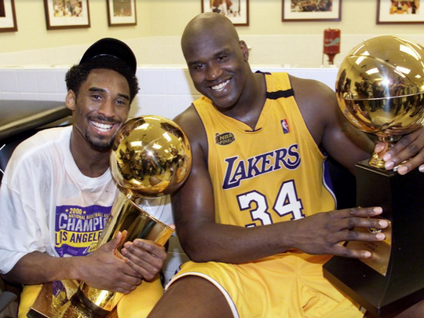
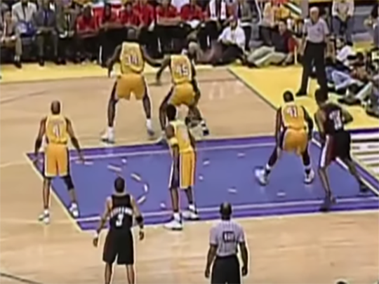

Here, we have Kobe Bryant and Shaquille O’Neal holding the trophies that they have acquired from that season.

The starting players’ jersey numbers for Game 7 were: 4, 8, 34, 45, and 41. They paved the way for the game’s eventual victory for the Lakers.

As seen here, we have the defining “Kobe-Shaq Alley Oop” that practically ended the game. One thing’s for sure, it’s better than anything the Houston Rockets could do at the time!